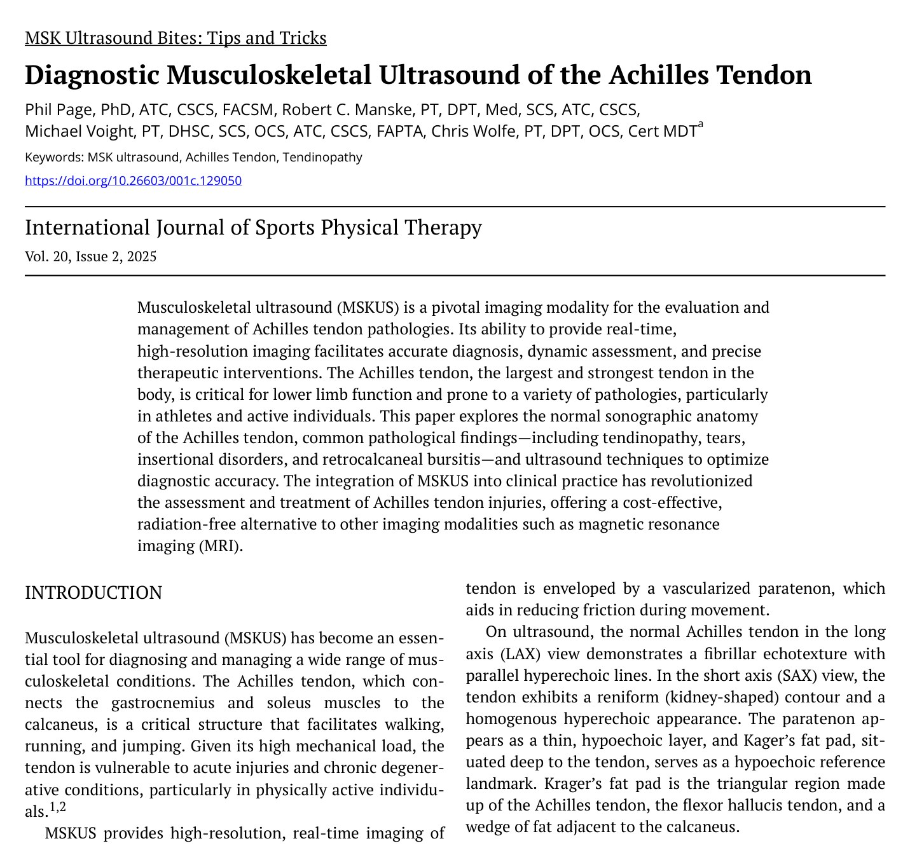
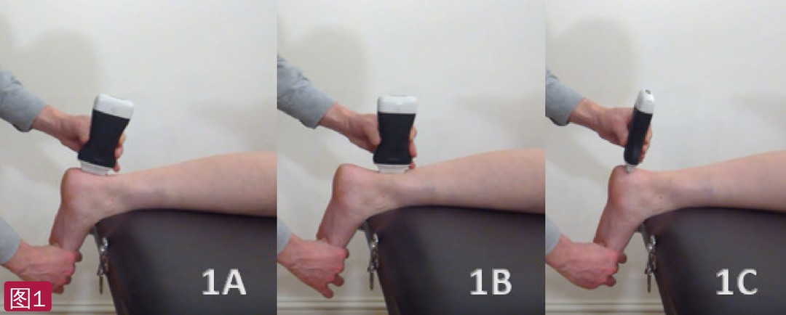
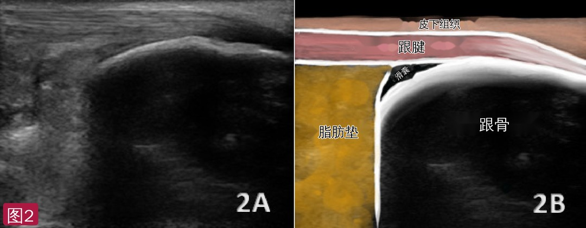
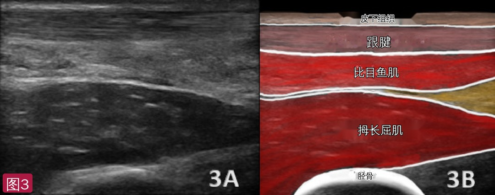
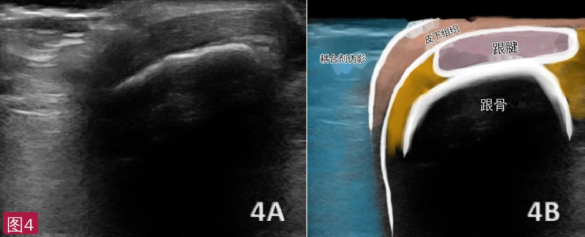
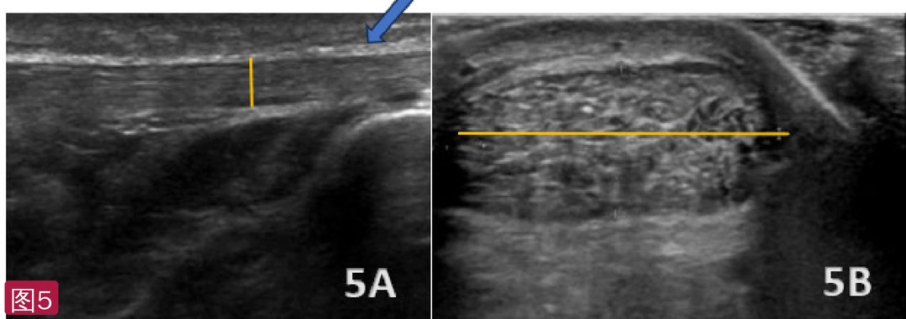
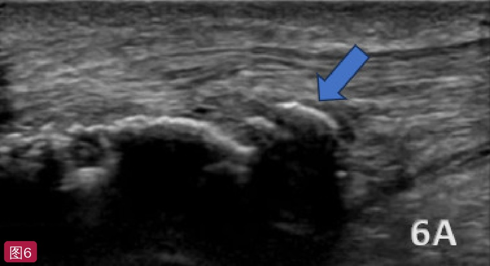
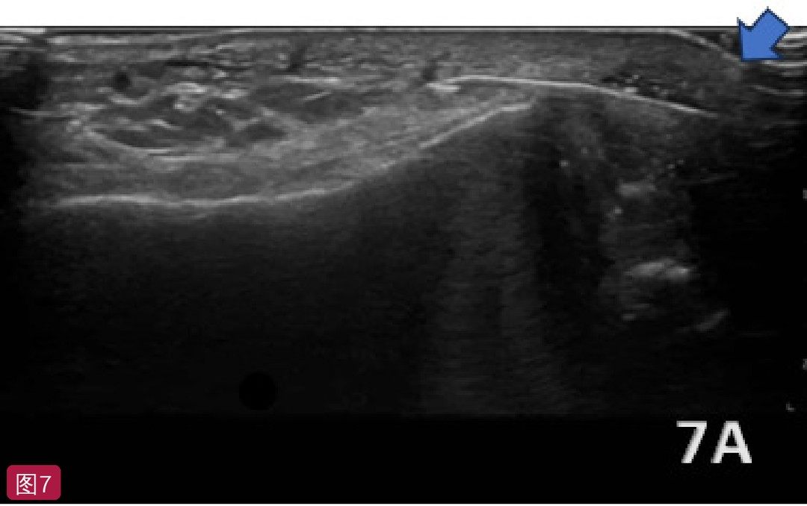
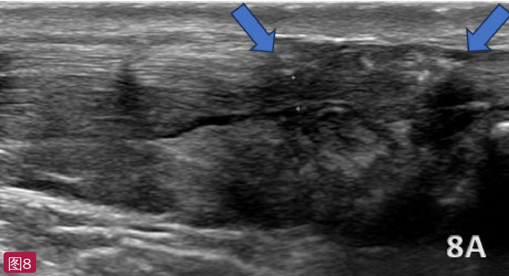
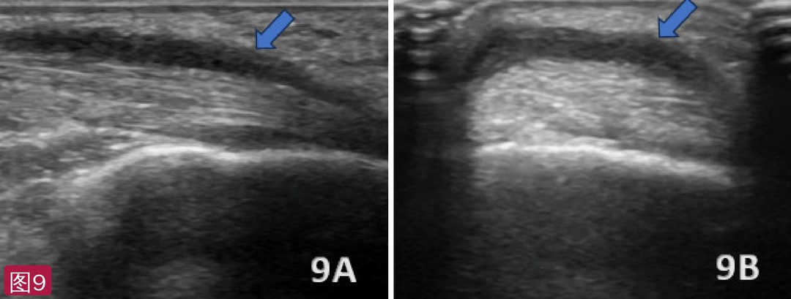

🔖原文首页（IJSPT 2025 年第 20 卷第 2 期，“肌骨超声小贴士”栏目）
📚 文献卡片
▪ 英文原题：Diagnostic Musculoskeletal Ultrasound of the Achilles Tendon（跟腱的诊断性肌骨超声）
▪ 作者：Phil Page, PhD, ATC · Robert C. Manske, PT, DPT · Michael Voight, PT, DHSc · Chris Wolfe, PT, DPT
▪ 栏目：MSK Ultrasound Bites: Tips and Tricks（肌骨超声小贴士）
▪ 期刊：International Journal of Sports Physical Therapy（IJSPT）
▪ 年卷期：2025;20(2):306-314
▪ PMCID：PMC11788094
▪ 关键词：MSK ultrasound · Achilles tendon · tendinopathy
跟腱是人体最大、最强的肌腱，把腓肠肌和比目鱼肌连到跟骨，是走、跑、跳的关键结构。负荷大，因此容易发生急性损伤和慢性退变，尤其是运动员和活跃人群。
肌骨超声（MSKUS）可以高分辨率、实时地评估跟腱结构和周围组织；与 MRI 不同，它是动态的，可以在活动中评估功能，而且更容易获得、更便宜、无辐射。本文介绍跟腱的正常声像图、常见病变（肌腱病、撕裂、止点病变、跟骨后滑囊炎等）和扫查技巧。
| 项目 | 要点 |
|---|---|
| 体位 | 俯卧，足垂于床沿或垫枕（也可跪在稳固的椅子上）；先背屈绷紧跟腱 |
| 探头 | 高频线阵 10～15 MHz；长轴 + 短轴两个平面 |
| 正常 | 长轴：平行高回声线的纤维状结构；短轴：肾形、均匀高回声；厚约 4～6 mm（4.94 ± 1.24 mm） |
| 肌腱病 | 增厚（有症状者常 >7 mm）、低回声、纤维结构紊乱，慢性者多普勒见新生血管；短轴由肾形变圆 |
| 撕裂 | 多在止点近端 2～6 cm 的“分水岭”区；部分撕裂为局灶低回声，完全断裂为低/无回声裂隙伴断端回缩 |
| 止点病变 | 远端 2 cm 增厚、低回声，止点钙化/骨赘，跟骨后滑囊积液；Haglund 畸形见跟骨后上骨性突起 |
| 动态 | 被动背屈/跖屈或挤压小腿（Thompson 试验）看肌腱滑动和连续性；多普勒时肌腱要放松 |
一句话概括：长轴看连续性和纤维结构，短轴看厚度和形状，再加动态和多普勒，就能分清肌腱病、撕裂、止点病变和腱周炎。
• 跟腱由腓肠肌和比目鱼肌汇合而成，止于跟骨后面；长约 15 cm，向远端逐渐变细，肌腱连接处的高度因人而异
• 外面包着有血管的腱旁组织，减少活动时的摩擦；超声上为一层薄的低回声
• 长轴：平行高回声线组成的纤维状回声；短轴：肾形轮廓、均匀高回声
• Kager 脂肪垫位于跟腱深面，是由跟腱、拇长屈肌腱和跟骨旁脂肪楔构成的三角区，超声上作为低回声参照标志
• 体位：俯卧，足垂于床沿或放在垫枕上，便于跖屈/背屈做动态评估；也可让患者跪在稳固的扶手椅上。一般先把足背屈，让跟腱绷紧
• 探头：高频（10～15 MHz）线阵
• 短轴（横切面）：探头与跟腱垂直，发现增厚、部分撕裂或断裂
• 长轴（纵切面）：探头顺着纤维方向，评估肌肉和肌腱的连续性
• 动态手法：被动背屈和跖屈，或轻挤小腿（Thompson 试验），评估肌腱滑动和连续性；同时评估跟骨后滑囊和 Kager 脂肪垫。跖屈时 Kager 脂肪垫会伸入跟骨后滑囊直到止点，中立位时则回缩、肌腱贴住跟骨上结节
• 各向异性伪像：调整探头角度即可消除，止点处的“低回声”可能就是它，不要误判为病变

🔖图1：探头放置。1A 止点长轴：探头参考端朝近端，放在跟骨结节止点上，略从后内向前外倾斜，前后翘动探头扫完整个止点；1B 中段长轴：保持长轴向近端滑动，可一直扫到腘窝看腓肠肌和比目鱼肌，并从内向外扫；1C 止点短轴：探头横放在止点上，再向近端滑动
目标是拍到跟腱止于跟骨时逐渐变细、像箭头一样的轮廓（探头位置见图 1A）。跟骨后滑囊呈混合回声，把肌腱和跟骨隔开；Kager 脂肪垫在跟腱深面、跟骨近侧，呈脂肪典型的混合回声，其异常（常为骨化）常与跟腱损伤相关。止点因各向异性可呈低回声，不要误判为病变——用前后翘动保持探头与弯曲的肌腱垂直。跟腱厚度正常值 4.94 ± 1.24 mm。

🔖图2：跟腱止点长轴正常声像图。2A 原始图；2B 标注图：皮下组织、跟腱、滑囊、脂肪垫和跟骨（标注已改为中文）
从止点向近端，把探头放在止点上方约 5～7 cm（2～3 英寸）处（图 1B），用跖屈/背屈做动态评估。比目鱼肌-跟腱连接处的高度因人而异，有时还能看到跖肌腱。向近端移动时没有明显骨性标志，目标是拍到最浅层纤维明亮、高回声、完整的纤维状结构。

🔖图3：跟腱中段长轴正常声像图。3A 原始图；3B 标注图：皮下组织、跟腱、比目鱼肌、拇长屈肌和胫骨（标注已改为中文）
探头放在真正止点稍近端（图 1C），横断面上看跟腱接近跟骨的部分，目标是拍到致密的“刷毛样”结构。正常为肾形；随着肌腱病加重、腱内压力增加，常变成圆形/球形。止点同样可因各向异性呈低回声；注意深面的 Kager 脂肪垫。原文给出短轴测量正常值 14.43 ± 4.07（未注明单位，按数值应为宽度，单位 mm）。

🔖图4：跟腱止点短轴正常声像图。4A 原始图；4B 标注图：耦合剂伪影、皮下组织、跟腱和跟骨（标注已改为中文）
退行性病变，超声表现为增厚、低回声区和纤维结构紊乱；慢性病例多普勒常见新生血管，尤其在中段。有症状的跟腱常厚 >7 mm，正常为 4～6 mm。腱病（tendinosis）指无炎症的慢性退变：低回声、增厚、纤维结构紊乱，慢性者还可有钙化或脂肪变性。

🔖图5：跟腱病。5A 长轴：跟腱明显增厚（蓝箭头），厚 10 mm（黄线），弥漫低回声区提示退变；5B 短轴：宽 24 mm（黄线），横截面增大、轮廓变圆或不规则、回声不均
跟骨后上方的骨性突起刺激跟腱。超声见跟骨后方皮质不规则、骨性突起；其上方软组织（包括跟骨后滑囊）可有炎症，呈低回声或肿胀；跟腱止点增厚；滑囊积液呈无回声或低回声区。

🔖图6：Haglund 畸形（长轴）——蓝箭头示跟骨后上方的骨性突起和皮质不规则
累及跟腱远端 2 cm：肌腱增厚、低回声，止点钙化或骨赘（高回声灶伴后方声影），可伴跟骨后滑囊积液、慢性者滑膜增生；能量多普勒可见止点血流增加。注意：做多普勒时肌腱要放松，张力可能压闭新生血管。

🔖图7：止点性跟腱病（长轴）——蓝箭头示止点处病变
• 多发生在止点近端 2～6 cm 的乏血管“分水岭”区
• 部分撕裂（<50%）：局灶低回声，仍有部分纤维连续；完全撕裂：纤维完全中断，呈低/无回声裂隙，常见断端回缩
• Kager 脂肪垫内常见积液和碎屑，多普勒可见轻度充血；撕脱伤可见止点附近骨片
• Kuwada 分级：I 级部分断裂（<50%）；II 级完全断裂、间隙 <3 cm；III 级间隙 3～6 cm；IV 级间隙 >6 cm
• 背屈和跖屈动态成像可确认中断和回缩

🔖图8：跟腱撕裂（长轴）——蓝箭头之间为纤维中断的低回声裂隙
• 跟骨后滑囊炎：与过用有关，跟腱前方滑囊呈无回声或低回声积液扩张，可与肌腱病或炎症性疾病并存；慢性炎症可致滑膜增生和钙化
• 腱周炎：跟腱远端后表面有新月形低回声，腱周和 Kager 脂肪垫多普勒血流增加；跟腱本身完整、无腱病表现——借此与累及肌腱内部的病变区分

🔖图9：跟腱腱周炎。9A 长轴；9B 短轴——蓝箭头示紧贴跟腱后表面的新月形低回声
• 引导介入：提高干针、糖皮质激素注射和富血小板血浆（PRP）治疗的精准度，确认靶点、避免误伤肌腱
• 监测愈合：系列超声追踪低回声区消退、纤维结构恢复和血流减少，指导康复进阶
• 优化康复：根据超声表现制定个体化方案，如肌腱病的离心训练、断裂后的活动度方案
• 证据级别低：简短的技术栏目文章，没有原始数据，以作者经验和少量文献为主；结论说超声在软组织评估上“优于”其他影像，缺少直接比较证据
• 亮点：三个标准切面的探头放置与标注图一一对应，覆盖肌腱病、Haglund 畸形、止点病变、撕裂和腱周炎，并给出厚度参考值和 Kuwada 分级
• 图号重复：撕裂图和腱周炎图在原文中都写作“图 8”，图片本身标为 9A/9B，本文按图片编号用图 9
• 数值交代不清：短轴正常值“14.43 ± 4.07”没有单位，且写成“厚度”，按数值应为宽度；两处正常值引用的参考文献编号也不一致
• 描述可商榷：Haglund 畸形一段写跟腱止点“回声增强”，通常病变肌腱应为回声减低；“脂肪垫异常常为骨化”的说法缺少引用
• 笔误：“Krager’s fat pad”应为 Kager；小标题“MDK ultrasound”应为 MSK；Kager 脂肪垫边界中的“flexor hallucis tendon”应为拇长屈肌腱
① 体位：俯卧、足垂床沿，先背屈绷紧；高频线阵 10～15 MHz
② 切面：止点长轴（箭头样变细）、中段长轴（止点上 5～7 cm）、止点短轴（肾形）
③ 正常：纤维状高回声，厚约 4～6 mm；止点低回声多为各向异性
④ 肌腱病：>7 mm、低回声、短轴变圆、多普勒新生血管（检查时肌腱放松）
⑤ 撕裂：止点上 2～6 cm，裂隙和断端回缩，Kuwada 分级，Thompson 试验动态确认
★ 其他：止点病变看钙化/骨赘和滑囊积液，Haglund 看骨性突起，腱周炎看新月形低回声而肌腱完整
欢迎关注悦美力公众号，获取更多物理治疗的专业知识！
📄参考文献：
Page P, Manske RC, Voight M, Wolfe C. Diagnostic Musculoskeletal Ultrasound of the Achilles Tendon. Int J Sports Phys Ther. 2025;20(2):306-314. PMCID: PMC11788094.
文中 9 张图片均来自原文：图 2B、3B、4B 解剖标注已改为中文；表格为编者整理，仅用于学术交流。